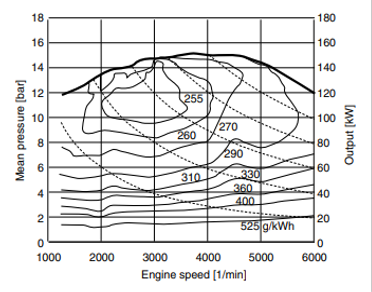

Mapa de Rendimiento del Motor (BSFC)

Listo. Haz clic en la gráfica para analizar el punto operativo.
Área de medición: 1000 - 6000 RPM | 0 - 18 bar
: 1
90%
: 1
Preajustes:
Diámetro Nominal (D)
631.9 mm
Radio Dinámico (rd)
0.3075 m
Perímetro Dinámico (P)
1.9320 m
Ancho / Perfil
205 / 112.8 mm
kg
Cx
m²
Crr
%
kg/m³